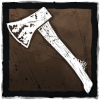

A CAÇADORA
Armada com machadinhas arremessáveis, a Caçadora é uma ameaça constante a Sobreviventes, mesmo os bem distantes. Com paciência e precisão, as perseguições acabam rápido como começam.
Preveja as ações dos Sobreviventes e bote a machadinha para voar. Não existe nada como o som gratificante do alvo sendo atingido.
Raio de Terror: 20m
Velocidade: 4.4 m/s
Altura: Alto
Poder:
Machadinhas de Caça

Comece a partida com 5 Machadinhas de Caça que podem ser carregadas e lançadas com precisão letal.
Recarregue seu estoque de machadinhas nos armários.
VANTAGENS
Besta da Caça |
Perca o Raio de Terror e a Luz Vermelha ao entrar no modo Sede de Sangue, dificultando preverem suas ações numa perseguição. |
Instinto Territorial |
De longe, veja a aura de qualquer Sobrevivente que entrar no porão, deixando um lugar já perigoso ainda mais. |
Feitiço: Canção de Ninar da Caçadora |
Gere um Totem Enfeitiçado. Remova o auxílio sonoro de testes de perícia ao enganchar Sobreviventes. Os efeitos cessam quando o Totem é purificado. |